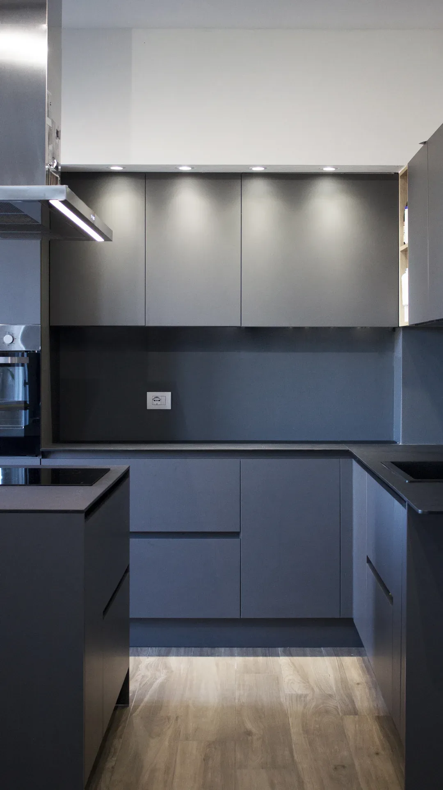

1 / 3
Casa CM
Appartamento
Via Fusco, Modena, Italia
2022
Appartamento
Via Fusco, Modena, Italia
2022
Samuele Silvestri
Architetto
Via Asiago 58, 41125 Modena
info@samuelesilvestriarchitetto.com
+39 366 493 8286
Instagram Iscr. Ordine degli Architetti di Modena n°1437 – sez. A
P.IVA 04180440366 Privacy
Architetto
Via Asiago 58, 41125 Modena
info@samuelesilvestriarchitetto.com
+39 366 493 8286
Instagram Iscr. Ordine degli Architetti di Modena n°1437 – sez. A
P.IVA 04180440366 Privacy
